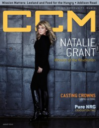

Natalie Grant
|  |
| August 2010 CCM Digital |
 |
| November 2013 CCM Digital |
 |
| 1 December 2015 CCM Digital |
Media coverage:
- Jul 1999 in CCM "Talent Pool: Naked and Exposed", by Karly Randolph-Pitman
- Aug 1999 in Profile "Snapshots: Natalie Grant", by Stephen Riggs
- Aug 2001 in CCM "Pride and Joy", by Melissa Riddle
- Apr 2003 in CCM "Puh-leeze Don't Call Natalie Grant A Diva.", by Anthony DeBarros
- Dec 2003 in CCM "5 Questions With: Natalie Grant"
- May 2004 in CCM "Behind The Music With", by Jessica Robin
- Jan 2005 in Christian Music Planet "Studio Works: Natalie Grant", by Jenni Isaac
- Mar 2005 in CCM "Even Better As The Real Thing", by Christina Farris
- Sep 2005 in Campus Life "Music: I Saw a World of Horror and Hope", by Todd Hertz
- Dec 2005 in CCM "By The Numbers: Natalie Grant", by Gregory J Rumburg
- Apr 2006 in CCM "!Pop", by Christina A. Banister
- May 2006 in CCM "Insider: Gala Grant"
- Nov 2006 in CCM "Things I ♥: Natalie Grant"
- Dec 2006 in CCM "Standing Room Only: The Revolve Tour", by Andy Argyrakis
- Mar 2007 in CCM "Insider: Women At Work", by Beau Black
- Mar 2007 in CCM "5 Questions With: Natalie Grant"
- Mar 2007 in Christian Music Planet "21 Things You Always Wanted To Know About...: Bianca Elliot & Natalie Grant", by Carol Crenshaw
- Nov 2007 in CCM "In The Studio: Natalie Grant"
- Apr 2010 in CCM Digital "Revolutionaries: The Home Foundation", by Natalie Grant
- Jun 2010 in CCM Digital "In the Studio: Natalie Grant", by Andrew Greer
- Aug 2010 in CCM Digital "A Righteous Revolution", by Caroline Lusk
- Feb 2012 in CCM Digital "Tour Spotlight: The Story Tour, Life Changers International Church, Hoffman Estates, IL", by Andy Argyrakis
- Feb 2013 in CCM Digital "Tour Spotlight: The Story Tour, Sears Centre, Hoffman Estates, IL", by Andy Argyrakis
- Oct 2013 in CCM Digital "Your World: A Passion, A Calling, A Movement", by Caroline Lusk
- Nov 2013 in CCM Digital "The Eye of the Hurricane", by Caroline Lusk
- 1 Dec 2015 in CCM Digital "The Real Natalie Grant", by Kevin Sparkman
- 1 Nov 2016 in CCM Digital "Her Real Voice", by Kevin Sparkman
Albums & reviews:
1999: Natalie Grant
- Jun 1999 in CCM, by Melissa Riddle
- Jul 1999 in YouthWorker, by Dave Urbanski
- Jul 1999 in Today's Christian Woman
- Jul 2001 in CCM, by Michael TenBrink
- Jul 2001 in YouthWorker, by Dave Urbanski
- Jul 2001 in CBA Marketplace, by Rhonda Owens
- Mar 2003 in CBA Marketplace, by Steve Parolini
- Apr 2003 in CCM, by Aaron King
- Jul 2003 in YouthWorker, by Dave Urbanski
- Jul 2003 in Today's Christian Woman
- May 2004 in CCM, by Aaron King
- Jul 2004 in YouthWorker, by Dave Urbanski
- Dec 2005 in CCM
- Apr 2005 in CCM, by David McCreary
- May 2005 in Today's Christian Woman, by Lisa Ann Cockrel
- May 2005 in Worship Leader
- Jul 2005 in YouthWorker, by Dave Urbanski
- Aug 2005 in Living With Teenagers, by Joy Fisher
- Feb 2008 in CCM, by Caroline Lusk
- May 2008 in YouthWorker, by Caroline Lusk
- May 2008 in Worship Leader
- May 2008 in Worship Leader
- Aug 2010 in CCM Digital, by Matt Conner
- Oct 2010 in Worship Leader, by Greg Wallace
- Oct 2013 in Charisma, by DeWayne Hamby
- Nov 2013 in CCM Digital, by Grace S. Aspinwall
- 15 Nov 2015 in CCM Digital, by Matt Conner
Award Summary (Nominations / Wins)
Dove Awards- Female Vocalist
- Female Vocalist
- Pop/Contemporary Recorded Song: "Live For Today"
- Female Vocalist
- Inspirational Album: Believe
- Pop/Contemporary Album: Awaken
- Artist
- Pop/Contemporary Recorded Song: "Held"
- Female Vocalist
- Song: "In Better Hands"
- Female Vocalist
- Artist
- Pop/Contemporary Recorded Song: "In Better Hands"
- Song: "I Will Not Be Moved"
- Female Vocalist
- Pop/Contemporary Album: Relentless
- Pop/Contemporary Recorded Song: "I Will Not Be Moved"
- Worship Song: "Breathe On Me"
- Female Vocalist
- Female Vocalist
- Pop/Contemporary Album: Love Revolution
- Artist
- Song: "Your Great Name"
- Song: "Alive"
- Female Vocalist
- Pop/Contemporary Recorded Song: "Alive (Mary Magdalene)"
- Pop/Contemporary Recorded Song: "Your Great Name"
- Song: "Hurricane"
- Pop/Contemporary Recorded Song: "Hurricane"
- Contemporary Christian Performance: "Hurricane"
- Gospel Performance: "I Love The Lord"
- Pop/Contemporary Album: Be One
- Song: "King Of The World"
- Rap/Hip Hop Recorded Song: "Even Louder (feat. Natalie Grant)"
- 2011 Grammy Awards
- Best Gospel/Contemporary Christian Music: "Alive (Wary Magdalene)"
- Best Gospel/Contemporary Christian Music: Hurricane
- Best Contemporary Christian Music Song: "Hurricane"
- Best Contemporary Christian Music Album: Hurricane
- Best Contemporary Christian Music Album: Be One
- Best Contemporary Christian Music Performance/Song: "King Of The World"
- Best Contemporary Christian Music Performance/Song: "Clean"
Books about Natalie Grant
- "Natalie Grant" in The Encyclopedia of Contemporary Christian Music (Mark Allan Powell, 2002)
Published articles:
© 2011 CMnexus. Last updated September 2019. Contact: editor -AT- cmnexus -DØT- org About